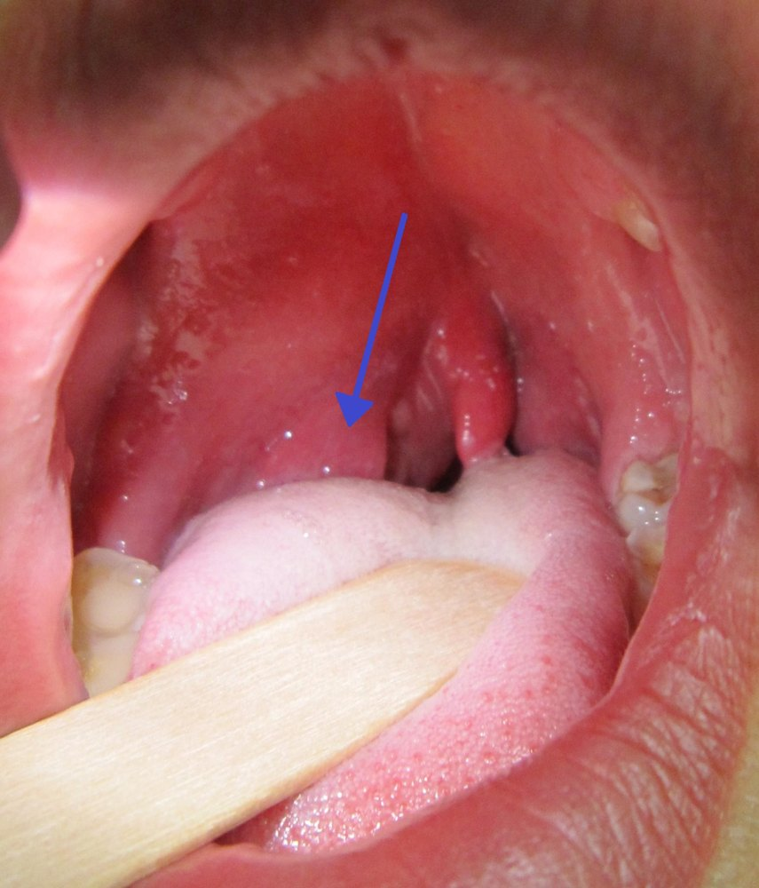
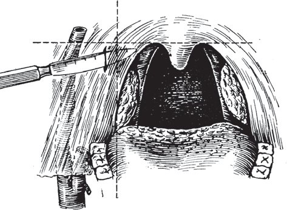

Сверка с PDF рубрикатора выполняется…
Паратонзиллярный абсцесс
Клинические рекомендации от 20.11.2024 · взрослые и дети
Основные положения
- Лечение проводит оториноларинголог в стационаре; основным методом является хирургическое вскрытие абсцесса.
- Диагноз подтверждают фарингоскопические признаки:
- гиперемия, отёк и инфильтрация нёбных дужек, миндалин, мягкого нёба и язычка;
- асимметрия мягкого нёба и смещение миндалины;
- ограничение открывания рта (тризм).
- Антибактериальную терапию начинают эмпирически, не дожидаясь результатов посева, препаратами широкого спектра, активными в отношении анаэробов; курс 10–14 дней.
- Показания к абсцесстонзиллэктомии (удалению миндалин одновременно со вскрытием абсцесса):
- частые ангины в анамнезе;
- повторный паратонзиллит или абсцесс;
- затяжное течение;
- неадекватное дренирование;
- кровотечение после вскрытия;
- прочие тонзиллогенные осложнения.
- Если выполнено только вскрытие: двусторонняя тонзиллэктомия в плановом порядке через 3 месяца.
Клиническая картина и классификация
Определение
Паратонзиллярный абсцесс характеризуется гнойным расплавлением паратонзиллярной клетчатки, расположенной между псевдокапсулой нёбной миндалины и глоточной фасцией, покрывающей констрикторы глотки.
Этиология
- тонзиллогенный: в большинстве случаев как осложнение ангины, реже на фоне хронического тонзиллита;
- одонтогенный: кариес задних зубов нижней челюсти (вторые моляры, зубы мудрости), периостит альвеолярного отростка;
- попадание инородного тела (например, рыбной кости) в паратонзиллярную клетчатку.
Наиболее частыми возбудителями являются бета-гемолитический стрептококк группы А и неспорообразующие анаэробные микроорганизмы.
На момент обращения отёчная форма паратонзиллита встречается редко, инфильтративная форма выявляется у 15–20% пациентов, абсцедирующая форма у 80–85%. Абсцесс формируется, как правило, через 4–6 дней от начала заболевания, в ряде случаев в течение нескольких часов.
Локализация
- передневерхний (супратонзиллярный): более 70%; между капсулой миндалины и верхней частью передней нёбной дужки;
- задний: около 15%; между миндалиной и задней нёбной дужкой;
- нижний: несколько более 5%; между нижним полюсом миндалины и боковой стенкой глотки;
- боковой: менее 5%; между средней частью миндалины и боковой стенкой глотки.
Клиническая картина
Абсцесс развивается, как правило, на фоне ангины или через несколько дней после неё.
- боль при глотании, постепенно становящаяся постоянной, резко усиливающаяся при глотании слюны, с иррадиацией в ухо и зубы;
- головная боль, разбитость, повышение температуры тела до фебрильных значений; больные отказываются от пищи и питья;
- нарастающий тризм жевательной мускулатуры;
- невнятная, гнусавая речь;
- боль при поворотах головы (вследствие воспаления мышц глотки и шейного лимфаденита): больной держит голову набок и поворачивает её вместе со всем корпусом.
- резкое выбухание верхнего полюса миндалины вместе с нёбными дужками и мягким нёбом к средней линии;
- язычок смещён в противоположную сторону;
- миндалина оттеснена книзу и кзади.
- припухлость в области задней нёбной дужки, возможен переход на боковую стенку глотки;
- миндалина и передняя дужка изменены незначительно;
- отёк язычка и мягкого нёба.
- фарингоскопические признаки выражены меньше всего (лишь отёк и инфильтрация нижней части передней дужки), хотя субъективные проявления значительны;
- обычно вовлекается прилежащая часть корня языка, иногда развивается отёк язычной поверхности надгортанника;
- коллатеральный отёк может распространиться на верхний отдел гортани и привести к её стенозу.
- встречается реже остальных форм, но протекает тяжелее всех: гной развивается в клетчатке тонзиллярной ниши кнаружи от миндалины, поэтому условия для самопроизвольного прорыва в глотку наименее благоприятны;
- выражены отёк и инфильтрация мягких тканей шеи на стороне поражения, кривошея, тризм;
- со стороны глотки изменения меньше: умеренное выбухание всей миндалины и отёк окружающих тканей.
Жалобы и анамнез
- недавно перенесённые ангины;
- хронический тонзиллит;
- паратонзиллиты и абсцессы в прошлом и их лечение;
- кариес;
- возможное попадание инородного тела (рыбная кость).
- выраженная, как правило односторонняя боль в горле, усиливающаяся при глотании, с иррадиацией в ухо и зубы;
- ощущение инородного тела;
- гнусавость;
- неприятный запах изо рта;
- боль в шее при поворотах головы;
- тризм;
- слюнотечение.
- слабость, разбитость;
- фебрильная лихорадка;
- головная боль.
Скрыто: возбудители, формы паратонзиллита.
В учебнике: ангины, тонзиллит и фарингит. Анатомия и физиология: глотка.
Диагностика
Диагноз устанавливают на основании
- анамнеза;
- физикального обследования с оценкой подчелюстной области и регионарных лимфатических узлов;
- фарингоскопии;
- лабораторных исследований.
Осмотр и фарингоскопия
- подозрение на паратонзиллярный абсцесс: осмотр оториноларинголога.
Фарингоскопия показана всем детям и взрослым; выявление фарингоскопических признаков является решающим в диагностике паратонзиллярного абсцесса.
- яркая гиперемия, отёк и инфильтрация нёбных дужек, миндалин, мягкого нёба и язычка;
- асимметрия мягкого нёба;
- смещение миндалины;
- ограничение открывания рта;
- регионарный лимфаденит.
Паратонзиллярный абсцесс справа (стрелка)

Ларингоскопия
- подозрение на распространение воспаления на гортаноглотку: непрямая ларингоскопия или фиброларингоскопия.
КТ и УЗИ шеи
- уточнение диагноза и локализации абсцесса;
- оценка состояния регионарных лимфатических узлов;
- дифференциальная диагностика воспаления паратонзиллярной клетчатки и более глубоких отделов шеи.
КТ и УЗИ шеи применяют в тяжёлых случаях, когда точный диагноз или локализацию абсцесса установить не удаётся.
Анализы крови и мочи, посев
Всем пациентам: развёрнутый общий анализ крови, С-реактивный белок (СРБ), общий анализ мочи.
Диагностические признаки- высокий лейкоцитоз со сдвигом формулы влево и высокий уровень СРБ свидетельствуют о высоком риске тонзиллогенных осложнений и требуют коррекции лечения, в том числе антибактериальной терапии.
- гнойное отделяемое после вскрытия: посев на аэробную и анаэробную микрофлору с определением чувствительности;
- мазок с миндалин на палочку дифтерии: исключение дифтерии.
Дифференциальная диагностика
Дифференцируют также с абсцессами подъязычной области и перикоронитом.
При сходной односторонней припухлости ротоглотки (дифтерия, скарлатина) прежде всего учитывают эпидемиологические данные.
| Заболевание | Отличия от паратонзиллярного абсцесса |
|---|---|
| Дифтерия |
|
| Скарлатина |
|
| Абсцесс язычной миндалины |
|
| Флегмона дна полости рта |
|
| Опухоли миндалины: рак, лимфосаркома, лимфоэпителиома |
|
| Поверхностное расположение сонной артерии или её аневризма (редко) |
|
Лечение
Лечение осуществляет оториноларинголог в специализированном учреждении; основным методом лечения является хирургическая санация полости абсцесса.
Иногда при своевременном адекватном консервативном лечении воспалительный процесс в паратонзиллярном пространстве подвергается обратному развитию; возможна также инкапсуляция небольшого абсцесса.
Хирургическое лечение
Впервые возникший абсцесс: вскрытие и дренирование.
- убедиться в отсутствии пульсации в месте разреза;
- глубже 0,5 см продвигаться только тупым путём;
- разрез достаточно широкий, до 4 см.
Местная аппликационная анестезия; место разреза по локализации:
- передневерхний: через переднюю нёбную дужку в типичном месте или в месте наибольшего выбухания;
- задний: через заднюю дужку, отступив 0,5 см от её края;
- нижний: в нижней части передней дужки.
Ткани рассекают вдоль хода сосудов на глубину 0,5–1 см, далее разводят корнцангом. После вскрытия проводятся полоскания глотки растворами антисептиков.
В последующем края разреза регулярно разводятся до начала заживления полости.Разрез при паратонзиллярном абсцессе в месте наибольшего выбухания (пересечение горизонтальной линии по нижнему краю мягкого нёба и вертикальной от нижнего края передней дужки)

Абсцесстонзиллэктомия (удаление нёбных миндалин одновременно со вскрытием) устраняет и сам очаг инфекции. Показания:
- частые ангины в анамнезе;
- повторный паратонзиллит или абсцесс;
- затяжное течение;
- неадекватное дренирование;
- кровотечение после вскрытия;
- прочие тонзиллогенные осложнения.
Операцию проводят в любом возрасте: от 3–4 до 70 лет и старше.
Противопоказания- терминальное или крайне тяжёлое состояние вследствие заболеваний внутренних органов;
- тромбоз сосудов мозга;
- разлитой менингит.
После операции осматривают тонзиллярную нишу; выбухание в ней свидетельствует о парафарингеальном абсцессе.
Антибактериальная терапия
- начинают эмпирически, не дожидаясь результатов посева;
- в этиологии абсцесса велико значение микробных ассоциаций с участием облигатных анаэробов, поэтому необходимы препараты широкого спектра, активные и в отношении анаэробов.
Курс 10–14 дней.
- препараты выбора: пенициллины, в том числе с ингибиторами бета-лактамаз;
- затруднённое глотание: диспергируемые формы, суспензии, инъекции;
- выраженный отёк тканей глотки и шеи, выраженный тризм, высокий риск генерализации: парентеральные цефалоспорины III поколения, при непереносимости клиндамицин;
- дети: предпочтительны ампициллин с сульбактамом и амоксициллин с клавулановой кислотой; доза зависит от возраста и массы тела.
| Препарат | Режим дозирования |
|---|---|
| Пероральные антибактериальные препараты | |
| Амоксициллин и клавулановая кислота внутрь |
|
| Амоксициллин с сульбактамомoff-label внутрь |
|
| Парентеральные антибактериальные препараты | |
| Цефтриаксон внутримышечно или внутривенно |
|
| Цефотаксим внутримышечно или внутривенно |
|
| Клиндамицин |
|
Дополнительная терапия
При выраженных воспалительных проявлениях используют нестероидные противовоспалительные препараты (НПВП) в стандартных дозах.
Всем пациентам рекомендованы антигистаминные препараты системного действия.
Всем пациентам рекомендованы препараты системного действия, повышающие естественную резистентность организма (препараты кальция, витамины C и A); при их применении необходим динамический контроль, следует избегать полипрагмазии.
При выраженной интоксикации необходима инфузионная дезинтоксикационная терапия.
Всем пациентам дополнительно назначают местные противовоспалительные, обезболивающие и антисептические средства; они не заменяют системную антибактериальную терапию, поскольку не влияют на вероятность поздних аутоиммунных осложнений.
Лекарственные формы местных средств- полоскания;
- инсуффляции;
- ингаляции;
- таблетки для рассасывания.
При назначении местных антисептиков соблюдают разрешённую кратность приёма и возрастные ограничения (некоторые из них токсичны), учитывают возможность аллергических реакций и индивидуальной непереносимости.
После хирургического лечения, не ранее чем через 3 недели после купирования острого воспаления, показана консультация физиотерапевта.
Послеоперационное ведение
После вскрытия абсцесса: двусторонняя тонзиллэктомия в плановом порядке через 3 месяца.
После тонзиллэктомии ограничение физической нагрузки в течение месяца.
Скрыто: осмотр ниши после операции, витамины, физиотерапия.
Техника операций в учебнике: вскрытие паратонзиллярного абсцесса, абсцесстонзиллэктомия.
Алгоритм действий врача при паратонзиллярном абсцессе
- 1
Боль в горле, выраженная асимметрия мягкого нёба, тризм жевательной мускулатуры?
Пациент жалуется на выраженную, как правило односторонную, боль в горле, усиливающуюся при глотании и иррадиирующую в ухо и зубы. Абсцесс развивается обычно на фоне ангины или через несколько дней после неё.
При фарингоскопии, которая является решающей в диагностике, оценивают наличие асимметрии мягкого нёба, смещения миндалины, гиперемии, отёка и инфильтрации нёбных дужек и миндалин, а также тризм жевательной мускулатуры. Уточняют, нет ли в анамнезе паратонзиллитов и абсцессов.
Есть ли признаки паратонзиллярного абсцесса и было ли подобное состояние ранее?
- 2
Дифференциальная диагностика, консервативная терапия, динамическое наблюдение
конец алгоритмаВыраженной асимметрии мягкого нёба и тризма нет, поэтому паратонзиллярный абсцесс не подтверждается. Проводят дифференциальную диагностику: прежде всего исключают дифтерию, скарлатину, абсцесс язычной миндалины, флегмону дна полости рта и опухоли миндалины. Назначают консервативную терапию и динамическое наблюдение.
Иногда при своевременном адекватном консервативном лечении воспалительный процесс в паратонзиллярном пространстве подвергается обратному развитию.
- 3
Впервые возникшее состояние
Абсцесс возник впервые. Лечение проводит оториноларинголог в хирургическом стационаре, его основным методом является хирургическая санация полости абсцесса. Для уточнения локализации в тяжёлых случаях применяют КТ и УЗИ шеи.
- 4
Вскрытие абсцесса
конец алгоритмаВыполняют вскрытие и дренирование абсцесса под местной аппликационной анестезией. Предварительно убеждаются в отсутствии пульсации в месте разреза, глубже 0,5 см продвигаются только тупым путём, разрез делают достаточно широким, до 4 см. После вскрытия проводят полоскания глотки растворами антисептиков, края разреза регулярно разводят.
Антибактериальную терапию начинают эмпирически, не дожидаясь результатов посева: препараты широкого спектра, активные в отношении анаэробов, курсом 10–14 дней; препаратами выбора являются пенициллины, в том числе с ингибиторами бета-лактамаз. Улучшение наступает через 12–24 часа. После вскрытия показана двусторонняя тонзиллэктомия в плановом порядке через 3 месяца.
- 5
Подобное состояние в анамнезе
Паратонзиллярный абсцесс или паратонзиллит уже возникал ранее. Повторный эпизод служит показанием к абсцесстонзиллэктомии, то есть к удалению нёбных миндалин одновременно со вскрытием абсцесса. Другими показаниями являются частые ангины в анамнезе, затяжное течение, неадекватное дренирование и кровотечение после вскрытия.
- 6
Тонзиллэктомия со вскрытием абсцесса
конец алгоритмаУдаляют нёбные миндалины одновременно со вскрытием абсцесса: такая операция устраняет и сам очаг инфекции. Противопоказаниями служат терминальное или крайне тяжёлое состояние вследствие заболеваний внутренних органов, тромбоз сосудов мозга и разлитой менингит.
Антибактериальную терапию проводят курсом 10–14 дней. После операции осматривают тонзиллярную нишу: выбухание в ней свидетельствует о парафарингеальном абсцессе. При неосложнённом течении выписка возможна на 5–7-е сутки после операции.
Профилактика. Показания к госпитализации. Осложнения
- при диспансеризации выявляют факторы риска: хронический тонзиллит, рецидивирующие ангины;
- закаливание;
- своевременное лечение заболеваний зубов и дёсен.
Лечение в хирургическом стационаре.
Показания к госпитализации- вскрытие абсцесса;
- удаление нёбных миндалин со вскрытием абсцесса.
Улучшение состояния после вскрытия абсцесса наблюдается уже через 12–24 часа.
- устойчивое купирование проявлений болезни и отсутствие угрозы жизни и здоровью пациента;
- после удаления нёбных миндалин со вскрытием абсцесса при неосложнённом течении: на 5–7-е сутки после операции.
- флегмона шеи;
- медиастинит;
- тонзиллогенный сепсис;
- инфекционно-токсический шок.
Риск выше при иммунодефиците: врождённом, на фоне иммуносупрессоров и цитостатиков, при ВИЧ-инфекции.
Коды МКБ-10
Источник и актуальность
Журнал сверки
Неточности и противоречия в тексте рекомендации
- Для цефтриаксона в таблице 1 указано «в течение 4-14 дней до 10 дней», что содержит противоречие в сроках; на странице формулировка приведена дословно.